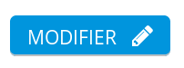

<!doctype html>
<html>

<head>
    <meta charset="utf-8">
    <meta name="viewport" content="width=device-width, initial-scale=1.0, maximum-scale=1.0, user-scalable=no">
    <title>Locasprint - MDN</title>
    <link rel="stylesheet" href="css/reveal.css">
    <link rel="stylesheet" href="css/theme/mozilla.css">
    <!-- Theme used for syntax highlighting of code -->
    <link rel="stylesheet" href="lib/css/zenburn.css">
    <!-- Printing and PDF exports -->
    <script>
    var link = document.createElement('link');
    link.rel = 'stylesheet';
    link.type = 'text/css';
    link.href = window.location.search.match(/print-pdf/gi) ? 'css/print/pdf.css' : 'css/print/paper.css';
    document.getElementsByTagName('head')[0].appendChild(link);
    </script>
</head>

<body>
    <div class="reveal">
        <div class="slides">
            <section data-markdown>
                <script type="text/template">
                    # Localizing MDN 
                    
                </script>
            </section>
            <section data-markdown>
                <script type="text/template">
                    ##MDN: What is it? 
                    [This site : https://developer.mozilla.org](https://developer.mozilla.org) 
                    
                </script>
            </section>
            <section data-markdown>
                <script type="text/template">
                    ##MDN: What is it?
                     
                    
                    Articles about web technologies, tutorials to learn…
                </script>
            </section>
            <section data-markdown>
                <script type="text/template">
                    ##MDN: How to contribute?
                    * Create a [GitHub](https://github.com) account
                    * Log into MDN (upper right corner)
                    <li></li>
                </script>
            </section>
            <section data-markdown>
                <script type="text/template">
                    ##MDN: How to contribute?
                    
                </script>
            </section>
            <section data-markdown>
                <script type="text/template">
                    ##MDN: Editing a page
                    
                    N.B. {{ThisIsAMacro}}
                </script>
            </section>
            <section data-markdown>
                <script type="text/template">
                    ##MDN: Editing a page
                    
                </script>
            </section>
            <section data-markdown>
                <script type="text/template">
                    ##MDN: What to do?
                    * [Translate the site interface on Pontoon](https://pontoon.mozilla.org/projects/mdn/)
                    * [Translate/maintain the prioritized pages](https://developer.mozilla.org/en-US/docs/tag/l10n%3Apriority)
                    * [Review pages for typos](https://developer.mozilla.org/en-US/docs/needs-review/editorial)
                    * Translate new pages and maintain them
                </script>
            </section>
            <section data-markdown>
                <script type="text/template">
                    ##MDN: The different sections
                    * [Glossary](https://developer.mozilla.org/en-US/docs/MDN/Doc_status/Glossary)
                    * [*Learning Area*](https://developer.mozilla.org/en-US/docs/MDN/Doc_status/Learn)
                    * [HTTP](https://developer.mozilla.org/en-US/docs/MDN/Doc_status/HTTP)
                    * [SVG](https://developer.mozilla.org/en-US/docs/MDN/Doc_status/SVG)
                    * [Plenty of Web APIs](https://developer.mozilla.org/en-US/docs/MDN/Doc_status/API)
                        * DOM
                        * IndexedDB
                        * CSSOM
                        * ServiceWorkers…
                    * [HTML]((https://developer.mozilla.org/en-US/docs/MDN/Doc_status/HTML), [JavaScript]((https://developer.mozilla.org/en-US/docs/MDN/Doc_status/JavaScript), [CSS]((https://developer.mozilla.org/en-US/docs/MDN/Doc_status/CSS)
                </script>
            </section>
            <section data-markdown>
                <script type="text/template">
                    ##MDN: Maintenance: the "Doc Status" pages
                    
                    N.B. You need ctrl+shift+r to force refresh the page.
                </script>
            </section>
            <section data-markdown>
                <script type="text/template">
                    ##MDN: After this meeting
                    * [Discourse](https://discourse.mozilla.org/c/mdn)
                    * [Le canal IRC #mdn](https://kiwiirc.com/client/irc.mozilla.org:6667/mdn/?nick=NewContrib?)
                </script>
            </section>
        </div>
    </div>
    <script src="lib/js/head.min.js"></script>
    <script src="js/reveal.js"></script>
    <script>
    // More info https://github.com/hakimel/reveal.js#configuration
    Reveal.initialize({
        history: true,
        slidenumber: true,
        center: true,

        // More info https://github.com/hakimel/reveal.js#dependencies
        dependencies: [{
            src: 'plugin/markdown/marked.js'
        }, {
            src: 'plugin/markdown/markdown.js'
        }, {
            src: 'plugin/notes/notes.js',
            async: true
        }, {
            src: 'plugin/highlight/highlight.js',
            async: true,
            callback: function() {
                hljs.initHighlightingOnLoad();
            }
        }]
    });
    </script>
    <style type="text/css">
    /* 1. Style header/footer <div> so they are positioned as desired. */
    
    #header-left {
        position: absolute;
        top: 5%;
        left: 5%;
        font-size: 0.5em;
    }
    
    #header-right {
        position: absolute;
        top: 5%;
        right: 5%;
        font-size: 0.5em;
    }
    
    #footer-left {
        position: absolute;
        bottom: 5%;
        left: 5%;
        font-size: 0.5em;
    }
    </style>
    <!-- 2. Create hidden header/footer <div> -->
    <div id="hidden" style="display:none;">
        <div id="header">
            <div id="footer-left">Communauté Mozilla francophone - CC-BY-SA</div>
        </div>
    </div>
    <script src="https://code.jquery.com/jquery-2.2.4.min.js"></script>
    <script type="text/javascript">
    // 3. On Reveal.js ready event, copy header/footer <div> into each `.slide-background` <div>
    var header = $('#header').html();
    if (window.location.search.match(/print-pdf/gi)) {
        Reveal.addEventListener('ready', function(event) {
            $('.slide-background').append(header);
        });
    } else {
        $('div.reveal').append(header);
    }
    </script>
</body>

</html>
